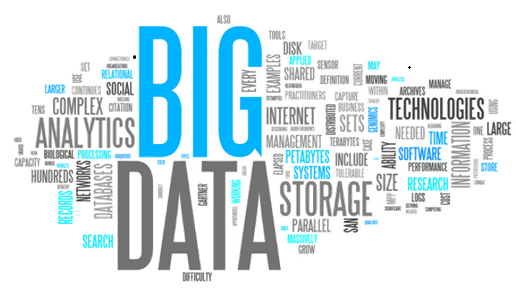
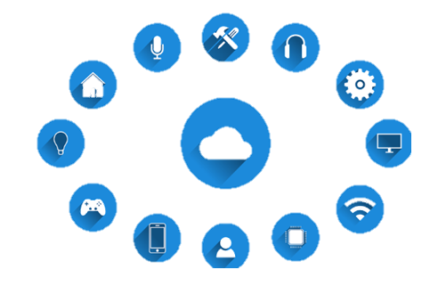

빅 데이터
빅데이터는 기존의 데이터베이스 관리도구를 넘어서는 심지어 데이터베이스 형태를 초울하여 비정형
빅데이터의 특징은 크게 다음 3가지로 요약 할 수 있습니다. 일명 3V. 크기(Volume), 다양성(Variety), 속도(Velocity)입니다.
데이터의 물리적인 크기를 말하는 크기 - Volume, 데이터의 형태 유무와, 연산가능 여부에 따라 나누어지는 데이터의 다양성 - Variety,
그리고 이를 빠르게 분석하고 처리하는 능력인 속도 - Velocity로 구분 됩니다.
여기에 최근에는 정확성(Veracity)와 가변성(Variability), 가치(Value), 시각화(Visualization) 등의 속성이 추가되어 불리기도 합니다.
우리가 사용하는 스마트 기기들, 앱, 소셜 미디어까지 스마트 인프라가 구축되면서 교육, 의료, 교통, 공공분야까지 빅데이터의 활용 영역은
점점 더 넓어지고 있고 앞으로도 그 가능성은 무궁무진할 것으로 예상됩니다.

사물 인터넷
사물인터넷은 'Internet of Things'를 번역한 용어로 사람이나 사물, 프로세스 등의 모든 객체들이 인터넷으로 연결되어 소통하는 미래 네트워크 기술이라 설명할 수 있습니다.
스마트폰 하나로 집안 내의 사물을 동작시키거나 상태를 확인하고, 개인의 생활 패턴을 분석하여 운동량과 건강 상태에 대한 정보를 사용자에게 제공하거나
특별한 약병이 시간에 맞추어 약을 복용할 수 있도록 사용자에게 복용 시간임을 알리고 복용 여부를 체크하는 등의 일이
사물인터넷의 기술이 적용된 예입니다. 현재 우리 사회에서 요긴하게 쓰이고 있는 사물인터넷 기술의 예시로는 kt의 기가지니로 홈iot 서비스를 제공하고 있습니다.
해외에서는 도시 전역 cctv에 오디오센서를 설치하여 총소리나 비명소리와 같은 특정한 소리에 반응하는 기술을 접목시켜 범죄율을 크게 줄인 사례가 있습니다.
이 처럼 IOT는 이미 실현되었고 점차 영역을 확대해나가 우리 사회에 큰 변화와 혁신을 가져 올 것입니다.